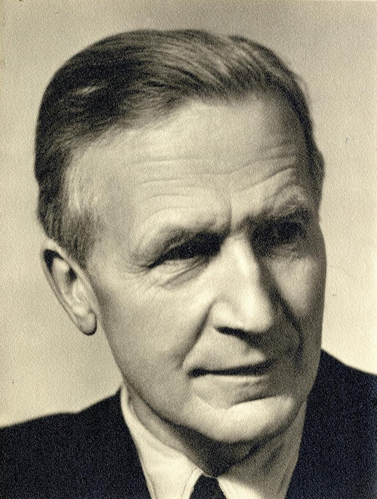

Description
Futura was designed by Paul Renner in 1927. Futura relied on geometric shapes forms, from circles, triangles, rectangles, etc. Futura is associated with the Bauhaus Movement, which primarily stripped down design into essential elements, relying on simplifying and incorporating type within designs.
A B C D E F G H I J K L M O P Q R S T U V W X Y Z a b c d e f g h i j k l m o p s t u v w x y z 0 1 2 3 4 5 6 7 8 9 (! @ # $ % ^ & * : " / ?)
Paul Renner
Paul Renner, August 9, 1878, was born in Wernigerode, which is located in Prussia. He was a German typeface designer, graphic designer, painter, teacher, etc. In 1926 was the head of the printing trade school in Munich, then had a Master School for Germany’s Printers. He was critical of abstract art and the modern movements at the time. He grew into the functionality of modernism, which inspired the Futura typeface. He also merged two typefaces: Times New Roman and Gothic. Renner stood against the Nazi party and published his views in a book called Kulturbolschewismus (Cultural Bolshevism). The Nazi party would later criticize and arrest him. Renner’s famous works were Die Kunst der Typographie and Typografie als Kunst. In these books, he created instructions for good design and techniques. Later, he made the typeface Futura, which had strong ties to Bauhaus.

Ties to Bauhaus
The founder of Bauhaus was a german architec, Walter Groupius in 1919. The Bauhaus was also in the era when mass production started. Mass production changed consumer behavior; people would consume products more frequently. The Bauhaus saw mass production as a way of simplifying the craft while maintaining its functionality and purpose. By simplifying designs, the easier it was to produce products at a faster rate. Futura is not directly linked to Bauhaus but it came from the ideas of Bauhaus. The simplification of text and stripping it down to gemotrical shapes. Before Bauhaus graphic design was less innovative, type and poster designs relied on decorative elements that didn’t blend together. When type is too decorative it becomes illegible and a lot less people knew how to read. Futura design is simple and easy for viewers to understand. It grabes the viewer and quickly delivers the information. In the era of mass production and fast consumption, futura was essential for that time period.
Anatomy
The anatomy of Futra displayed geometric shapes with a broad stroke. The ascenders and descenders are tall and extend to the height of uppercase letters. This element adds a certain elegance to the font and a nice contrast to the round geometric shapes of the letters. The x-height of the font is low, making it difficult for viewers to read in body text. Futura is great for displaying text and body text. Futura has succeeded in multiple logo designs, such as Volkswagon, Nike, Dominos Pizza, Clavin Klien, Louis Vuitton, Gillette, and Red Bull. Futura is very universal and applies to many different bands.
Connection to Constructivism
Constructivism was a modern art movement that started in 1917. It has ties to the Russian Soviet Union after the Russian Revolution. Constructivism borrowed ideas from Avant-garde, cubism, and futurism. At its core, constructivism essentially returned to the basics and construction. \